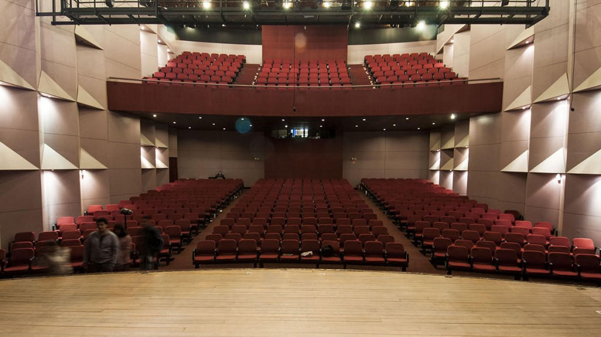
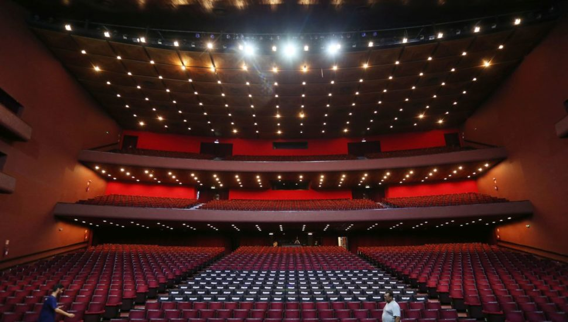
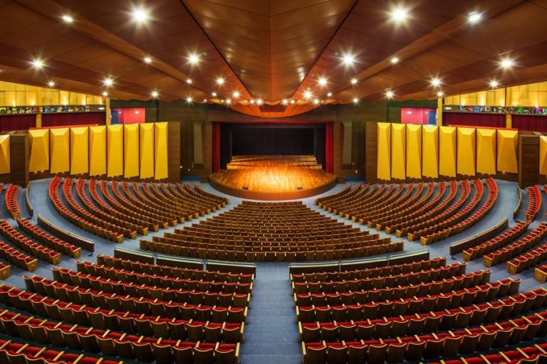
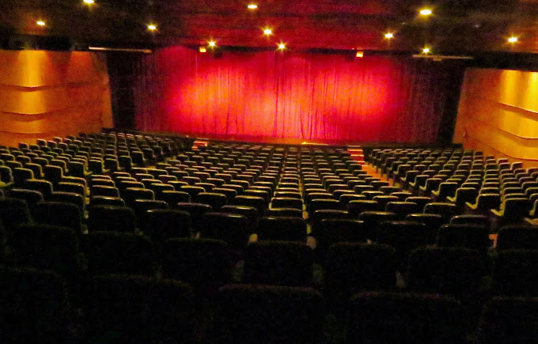
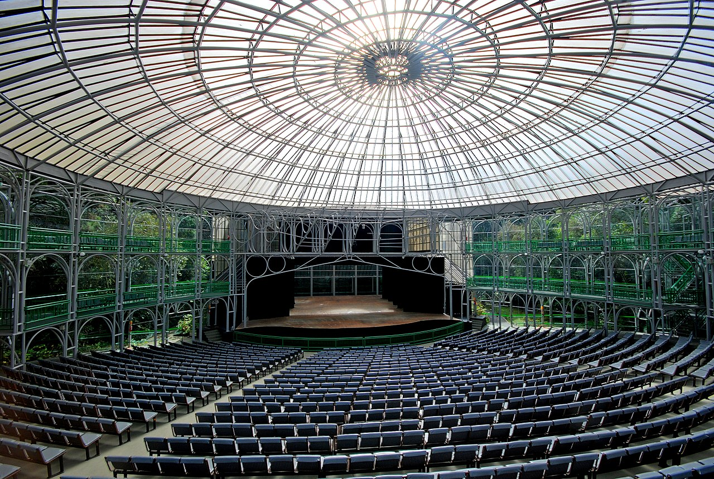

TEATROS CURITIBA

TEATRO TUCA
O TUCA (Teatro da PUCPR) está localizado na Rua Imaculada Conceição, 1155, Prado Velho,
no térreo do bloco azul.
Possui capacidade para até 640 pessoas e recebe diversos eventos, como seminários,
palestras, apresentações musicais, teatrais e colações de grau.
O e-mail para contato é auditorios@pucpr.br e o telefone 41-3271-1604.

TEATRO GUAÍRA
Marco do modernismo paranaense, o Centro Cultural Teatro Guaíra é um dos maiores complexos culturais da América
Latina, com 16,9 mil metros quadrados e capacidade para 2,8 mil pessoas. Mantido pelo Governo do Paraná, está
sediado na praça Santos Andrade.

TEATRO UNIVERSIDADE POSITIVO
O teatro da Universidade Positivo foi fundado em 2008 e é considerado o maior teatro
do Paraná e um dos mais bem equipados do Brasil. Com sua grande estrutura, cujo projeto arquitetônico foi
inspirado no teatro grego Epidaurus, do século IV a.C, consegue suportar até 2400 pessoas sendo um belo
atrativo para grandes shows.

TEATRO MONTENEGRO
Localizado no bairro Batel, este teatro encontra-se dentro do shooping Novo, com a capacidade de 551 pessoas,
foi inaugurado em setembro de 1993, homenageia a atriz e escritora Fernanda Montenegro

TEATRO ÓPERA DE ARAME
Um dos símbolos mais marcantes de curitiba, a opera de arame, fundada em 1992, acolhe todo o tipo de
espetáculo. Juntamente
do teatro marcante, a paisagem que completa o espaço, entre lagos, vegetação e cascatas este espaço virou
cenário de grandes eventos, sendo que ao
ar livre pode abrigar mais de 20.000 pessoas.